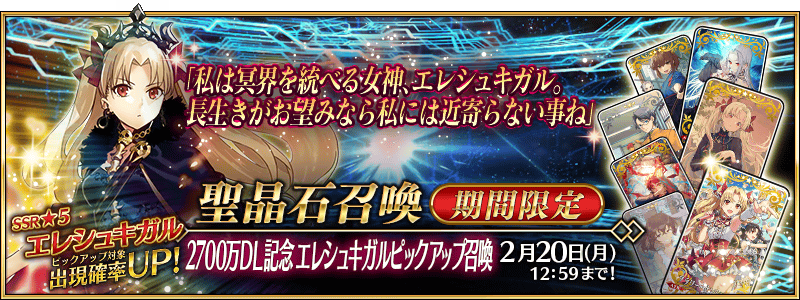
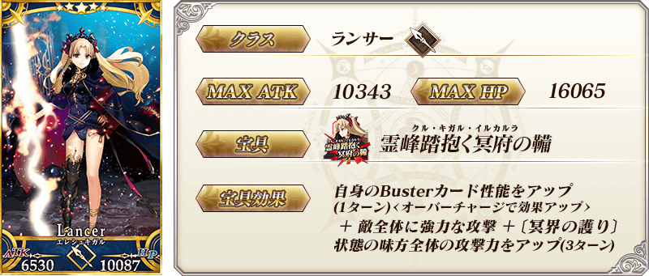
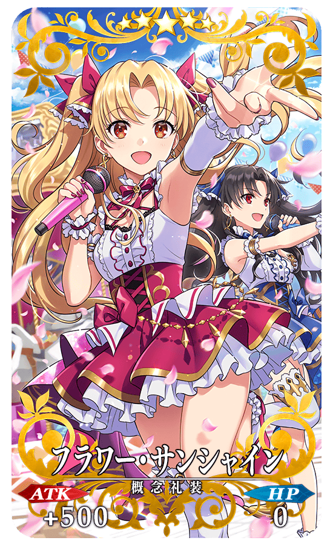
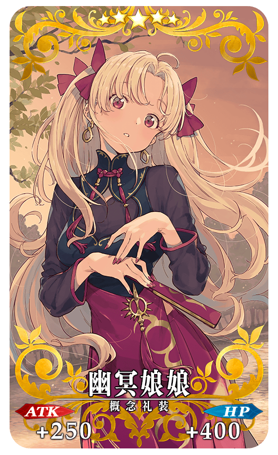
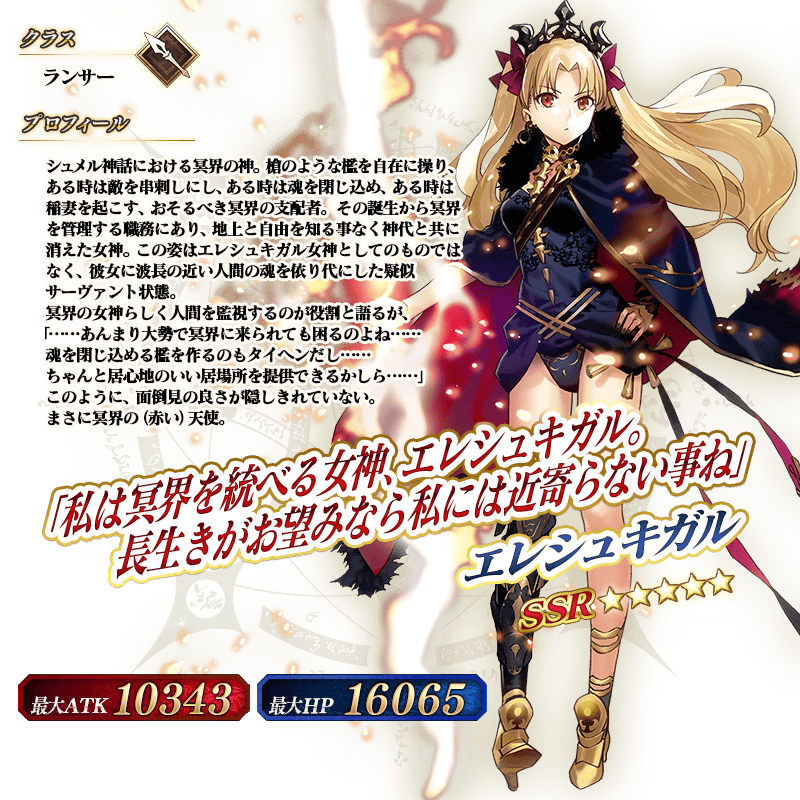
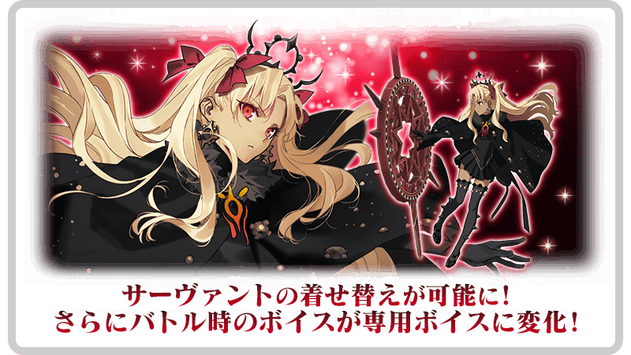
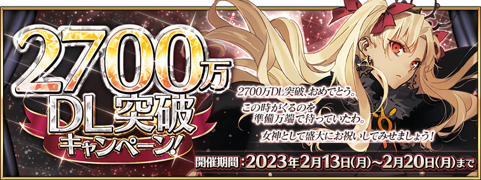

◆「2700萬DL記念 埃列什基伽勒Pick Up召喚」期間◆
期間:2023年2月13日(一) 17:00～2月20日(一) 11:59
為了記念2700萬DL突破，期間限定從者「★5(SSR)埃列什基伽勒」Pick Up！
並且，把「★5(SSR)埃列什基伽勒」當作主題的2種期間限定概念禮裝也Pick Up！
※上述立繪是「★5(SSR)埃列什基伽勒」穿著靈衣的姿態。
【Pick Up對象】
▼期間限定從者
・★5(SSR)埃列什基伽勒
▼期間限定概念禮裝
・★5(SSR)フラワー・サンシャイン
・★5(SSR)幽冥娘娘
Pick Up期間中，Pick Up對象從者與概念禮裝的出現機率提升！
詳情請在聖晶石召喚畫面左下的召喚詳細確認。
11次召喚中確定1張★4(SR)以上和確定1位★3(R)以上的從者！ ※確定★4(SR)以上包含從者和概念禮裝。
【重要】
◆關於「確定召喚」功能◆
・期間限定Pick Up召喚中，在329次以內未召喚到Pick Up對象★5(SSR)從者情況，只限1次可在進行第330次的召喚時「確定召喚」必定1位Pick Up對象★5(SSR)從者。
・在同時間舉辦多個期間限定Pick Up召喚的情況，各召喚分別(每個召喚畫面頁面)計算召喚次數。另外，以每日交替Pick Up召喚的內容切換情況，各自分別計算召喚次數。舉例，每天23:00時間點變更召喚內容的Pick Up召喚情況，請注意在召喚內容變更的時間點會重置召喚次數的計算。
・請注意期間限定Pick Up召喚中滿足以下任何條件的話，在召喚畫面會顯示「Pick Up對象確定召喚已結束。(ピックアップ対象の確定召喚は終了しました。)」，該召喚中「確定召喚」功能變成無效。
・第329次前召喚到Pick Up對象★5(SSR)從者
・在第330次確定召喚到Pick Up對象★5(SSR)從者
・召喚次數在期間限定Pick Up召喚中用有償聖晶石、無償聖晶石、呼符進行召喚時都會計算。目前的召喚履歴可於該召喚畫面內確認。
※每10次召喚進行的「＋1次獎勵召喚」與用有償聖晶石進行的1天1次限定「1次召喚」也在計算的對象。
※每個召喚內容會分開計算「＋1次獎勵召喚」與1日1次限定的「1次召喚」。請注意在變更召喚內容那天的23:00，「＋1次獎勵召喚」和「1次召喚」的計算會被重置。
※透過有償聖晶石1個「1次召喚」的計算，也會在每天3:00重置。
・在進行11次召喚時滿足「確定召喚」功能條件的情況，在施行11次召喚中會確定召喚1位Pick Up對象★5(SSR)從者。屆時，11次召喚中保障的確定1張★4(SR)以上與確定1位★3(R)以上的從者會另外生效。
・期間限定Pick Up召喚結束後，無法繼承召喚次數到別的召喚。
・故事召喚、友情點數召喚為「確定召喚」功能的對象外。
◆關於1天1次限定的有償聖晶石召喚◆
※可以1天1次限定於期間限定召喚用有償聖晶石1個進行「1次召喚」。
※透過有償聖晶石1個的「1次召喚」，每天3:00重置。
※透過有償聖晶石1個的「1次召喚」對應的聖晶石召喚有好幾個的情況，各個召喚中1天各進行1次有償聖晶石1個的「1次召喚」。
※請注意就算進行透過有償聖晶石1個的「1次召喚」，不包含在1次獎勵的計算。
※聖晶石購入時賦予的「附贈(オマケ)」是做為無償聖晶石而不包含在有償聖晶石的個數，請注意別搞錯。另外，持有聖晶石的細項，可從持有道具一覧確認。
◆關於透過召喚獲得從者硬幣◆
在期間限定召喚、故事召喚、友情點數召喚中入手從者時，可獲得該從者的從者硬幣。
◆有關從者的注意◆
※下述的從者在Pick Up期間結束後不會追加到故事召喚。
・★5(SSR)埃列什基伽勒
※請注意下述的從者在本召喚為抽出對象外。
・★4(SR)特拉洛克
◆有關概念禮裝的注意◆
※請注意下述的概念禮裝在本召喚為抽出對象外。
・★5(SSR)羽化の森
・★4(SR)聖職者の晩餐
・★4(SR)エーレガンド
・★3(R)信ずるは我が神のみ
※2023年2月14日(二) 12:00以後，下述的概念禮裝變得也會從教學召喚被抽出，但不會從故事召喚被抽出。
還有，本召喚中到2023年2月20日(一) 11:59為止會被抽出。
・★4(SR)鋼の鍛錬
・★4(SR)宝石魔術･対影
※2023年2月14日(二) 12:00以後，下述的概念禮裝變得不會從故事召喚被抽出，追加至友情點數召喚。
還有，本召喚中到2023年2月20日(一) 11:59為止會被抽出。
・★3(R)持たざる者
期間限定從者
 ※上述「★5(SSR)埃列什基伽勒」的卡面為靈基再臨第2階段。
期間限定概念禮裝
|  |
★★★★★SSR
◆最大解放時效果◆ |
|  |
★★★★★SSR
◆最大解放時效果◆ |
 ※上述「★5(SSR)埃列什基伽勒」的立繪為靈基再臨第2階段。
介紹在本召喚Pick Up的「★5(SSR)埃列什基伽勒」寶具演出！
在本召喚Pick Up的「★5(SSR)埃列什基伽勒」的靈衣新登場！
通過第2部 第7章「Lostbelt No.7 黃金樹海紀行 冥界紀元 統御星球的存在」(後篇)的所有主線關卡的話，通過登場的靈衣開放權獲得關卡後，可入手上述靈衣開放權。
關於詳情請確認此處的公告。

其他還有，期間限定「2700萬DL突破宣傳活動」的情報公開中！
關於詳情，請自下述橫幅確認。
■「2700萬DL突破宣傳活動」詳細情報 